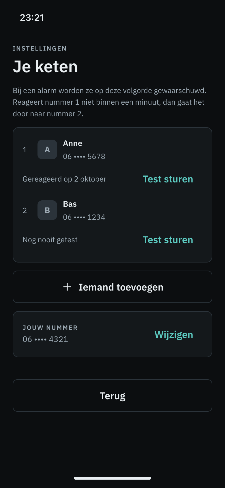
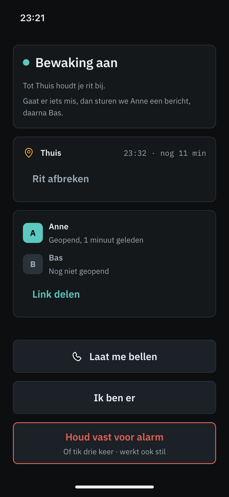

60%
van de vrouwen van 15 tot 25 jaar voelt zich weleens onveilig, tegen 27 procent van de mannen van die leeftijd.
Je zet een rit aan en de app houdt de tijd bij, tot jij laat weten dat je er bent.
In een testfase op iPhone. Nog niet te downloaden.


Twee schermen uit de app, met voorbeeldnamen.
Tot Thuis is een app voor wie alleen naar huis fietst. Laat je niet op tijd weten dat je er bent en reageer je ook niet, dan stuurt de app een bericht naar mensen die je zelf hebt gekozen. De app zorgt er niet voor dat je thuiskomt, wel dat het opvalt als je niet thuiskomt.
60%
van de vrouwen van 15 tot 25 jaar voelt zich weleens onveilig, tegen 27 procent van de mannen van die leeftijd.
2 op 3
vrouwen van 12 tot 25 jaar zegt in een jaar tijd weleens op straat te zijn lastiggevallen. Ruim een derde van hen zoekt op zo’n moment gezelschap of belt iemand op.
Bron: CBS Jeugdmonitor, 2022 (cijfers over 2020 en 2021)
95,7%
van de vrouwen voelt zich weleens onveilig op de fiets in het donker, tegen 82 procent van de mannen. Uit een verkennend onderzoek onder 5.190 fietsers.
Bron: Fietsersbond, 2022
Je zet een paar mensen in de app, in de volgorde waarin de app ze bij een alarm benadert. Daarna stuur je ze een test. Zo weten ze wat Tot Thuis is, en zie jij dat ze reageren.
Mila heeft jou opgegeven als vertrouwenspersoon bij Tot Thuis. Dit is een test. Tik op de link om te laten zien dat het aankomt. https://totthuis.nl/t#…
Achter het # staat een code die alleen bij deze ene test hoort en na korte tijd verloopt.
Je kiest waar je heen fietst en hoe lang je erover doet. Onderweg geeft je telefoon de server een teken van leven, en de server houdt de klok bij.
Ben je thuis, dan tik je op Ik ben er. Laat je niets weten en reageer je ook niet op de vraag van de app, of hoort de server niets meer van je telefoon, dan stuurt de app een bericht naar je eerste vertrouwenspersoon. Reageert die niet, dan gaat het naar de volgende.
De app belt nooit zelf de hulpdiensten.
Dan heeft iemand die je kent jou opgegeven als vertrouwenspersoon. Wie dat is, staat in de sms.
In een test staat een link naar een pagina op totthuis.nl met één knop. Tik je op die knop, dan ziet de afzender dat je gereageerd hebt. Alleen de link openen doet niets.
Krijg je een sms over een alarm, bel dan de persoon om wie het gaat.
Een sms van TotThuis en de pagina achter de link vragen nooit om geld, een wachtwoord of gegevens. Vraagt een bericht daar wel om, dan komt het niet van ons.
Een testfase met een kleine kring rond de maker. De app werkt alleen op iPhone en is nog niet te downloaden.
Een eerste groep testers.
Zonder datum en zonder belofte: een versie voor Android, en samen fietsen met mensen die je kent, waarbij de app het laatste stuk dat je alleen fietst blijft bewaken. Ook onderzoeken we of Tot Thuis geschikt is voor wie loopt.
Tot Thuis wordt gemaakt door Mischa van Schajik, Zaandam.
Een vraag, of iets gezien wat niet klopt? Mail naar info@totthuis.nl.
Tot Thuis (Dutch for “until home”) is an app for people who cycle home alone. You start a ride. If you do not confirm in time that you have arrived and do not respond, the app sends a text message to people you chose yourself. It does not make sure you get home; it makes sure someone notices when you don’t. It never contacts emergency services itself.
Text messages from TotThuis go only to the trusted contacts a user has entered in the app, and only to Dutch mobile numbers (+31). A contact is sent a test message when the user tests them, and an alert when a ride goes wrong. There is no marketing and no payment: the messages never advertise anything, and neither the messages nor this website ask for money, passwords or personal details.
A test message contains one link, of the form https://totthuis.nl/t#<token>. The token belongs to that one test only and expires. Opening the link does nothing; the contact taps a button on the page, so the user can see that they responded.
Tot Thuis is in a test phase with a small circle around its maker. It runs on iPhone only and is not available for download.
Tot Thuis is made by Mischa van Schajik, Zaandam, the Netherlands. Messages are sent with the sender name TotThuis through the EU platform of GatewayAPI. Contact: info@totthuis.nl.